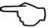
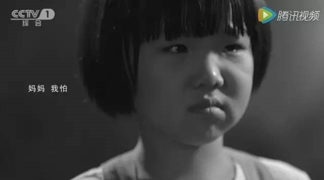
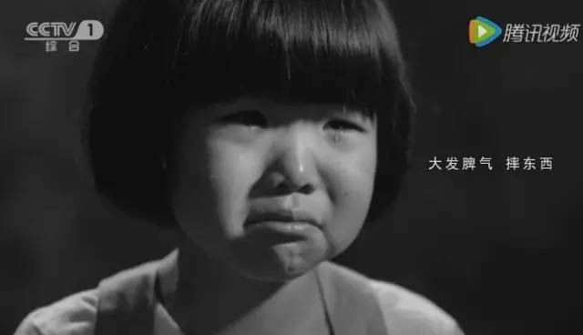

父母必看：央视首次曝光“儿童安全用药隐患”这个长期存在但被忽视的事实
作者：北京岙特杰诺生物科技有限公司 
今日精选
“这是一个真实的故事”一位5岁的小主人公付浠诺，在无声的世界中，用手语讲述了自己的故事， 她“无声的诉说”，戳中的恐怕不止是父母的“泪点”，更是值得所有人反思的“痛点”。
3年前，因发烧后用药不当，小女孩浠诺渐渐失去了听力。
浠诺说：“妈妈说我不到一岁就学会叫爸妈，听到音乐就会手舞足蹈。”


“用药不当后，我的听力越来越弱，我知道声音就在我身边，我很努力听，不过就是听不到。”
“妈妈，我怕。”

“我不敢跟其他小朋友玩，只能远远地看着。”
“有时候我会大发脾气，摔东西。

可是妈妈，不是我不乖，我只是想对你说话，但着急说不出来。
“是我把妈妈气哭了，但妈妈却跟我说对不起。”


浠诺试着对妈妈说，“妈妈不哭，妈妈笑。”懂事的令人心碎...


2005年的春晚上，一支由21位舞蹈演员表演的《千手观音》引发了轰动，但，这21位演员中有18位是在小时候因药致聋的。
“浠诺”，只是我国每年因用药不当致聋的30000个孩子之一。
据中国聋儿康复研究中心统计：因为用药不当，我国每年有约30000儿童，陷入无声世界，造成肝肾功能、神经系统损伤的难以计数。
世界卫生组织统计：中国每年有250万人以上因药物不良反应住院，50万人属于严重不良反应，每年约死亡20万人，而这个数字是交通事故致死人数的2倍。这样可怕的事情，其实就发生在我们的身边，而我们却不自知。
为什么用来治疗疾病的药，却成为伤害我们健康的“凶手”？
专家介绍，引起不同人药物反应不同的原因很多，有生理特征，临床表现等，而尤为重要的遗传因素往往易被忽视。很多常用药的基因型，在生产上市前就已经被定型了。如：发热患儿的首选退烧药“布洛芬和乙酰氨基酚”，专家介绍，这两类药的基因分别是CYP2C9和CYP3A4基因，但受遗传基因的影响，对于基因是不良型代谢的孩子服用这两种药物，会产生较大的毒副作用。
也就是说，“安全用药”不光是对症用药，更重要的一个因素是，人与药的基因型需要相匹配。
哪些药可能影响儿童的健康 ?
1、链霉素、卡那霉素、庆大霉素有可能损害儿童的听神经，引起耳聋；
2、多黏菌素、去甲肾上腺素能引起儿童的肾脏损伤；
3、胃复安能引起一些儿童的脑损伤；
4、四环素、氟哌酸等药物能影响幼儿牙齿、骨骼的发育；
5、感冒通能引起儿童血尿；
6、滴鼻净 ( 萘甲唑啉 ) 能引起儿童中毒等，儿童用药的选择应特别慎重。
使儿童至聋的药品都有哪些种类？
至今，临床上发现导致耳聋的药物有18类100余种，通称耳毒性药物。不同类药物导致耳聋的的机理不尽相同，但都能摧毁内耳的听毛细胞和螺旋神经节，从而使听觉系统导致严重损害，有些药物导致的耳聋是可治疗的，大部分则可造成听力永久性损害。
1、氨基甙类抗生素：庆大霉素、链霉素、卡那霉素、新霉素等。
2、非氨基糖甙类抗菌素：氯霉素、紫霉素，红霉素、万古霉素等。
3、利尿剂：速尿、利尿酸。
4、抗疟疾药物：奎宁、氯喹，水杨酸盐：阿司匹林、非那西汀、保泰松等。
5、抗肿瘤药物：顺铂，氮芥、博来霉素、氨甲嘌呤等。
6、中药：乌头碱、重金属盐(汞、铅、砷等)。
7、其他还有心得安、肼苯达嗪、胰岛素，碘酒、冼必泰等。
8、氨基甙类抗生素是国内最重要、最常见的药物性耳聋的原因。